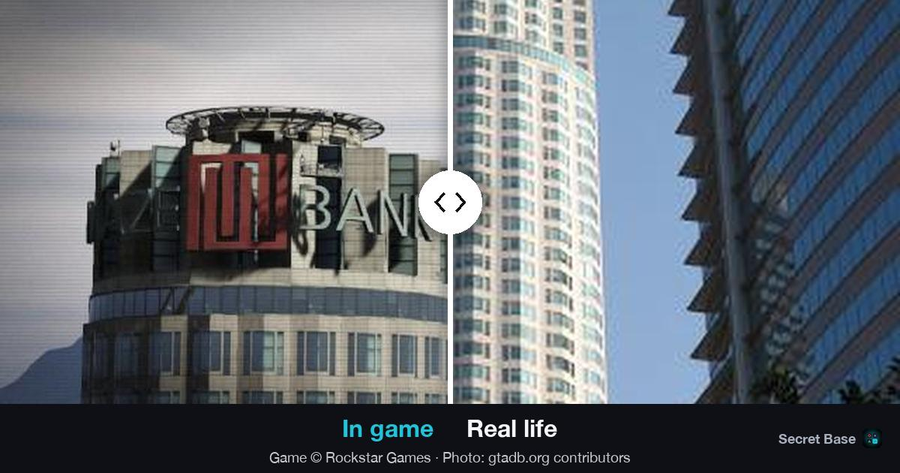
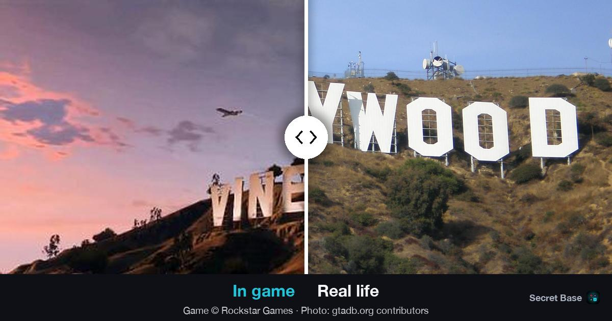
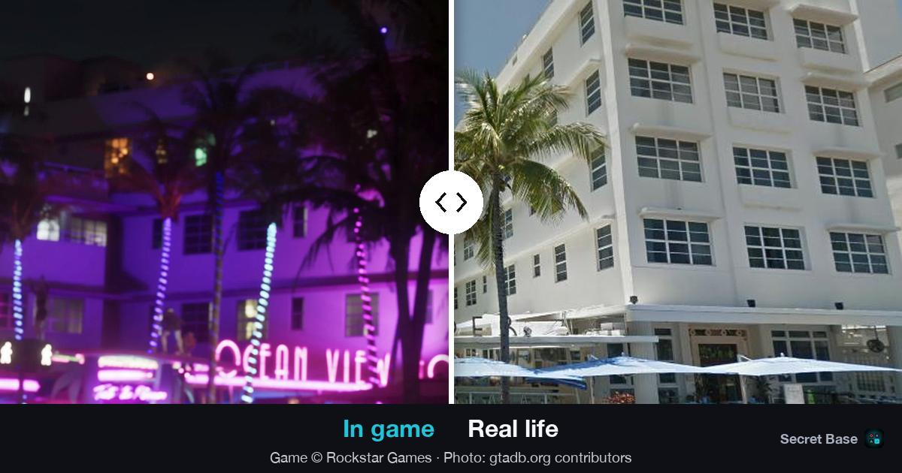
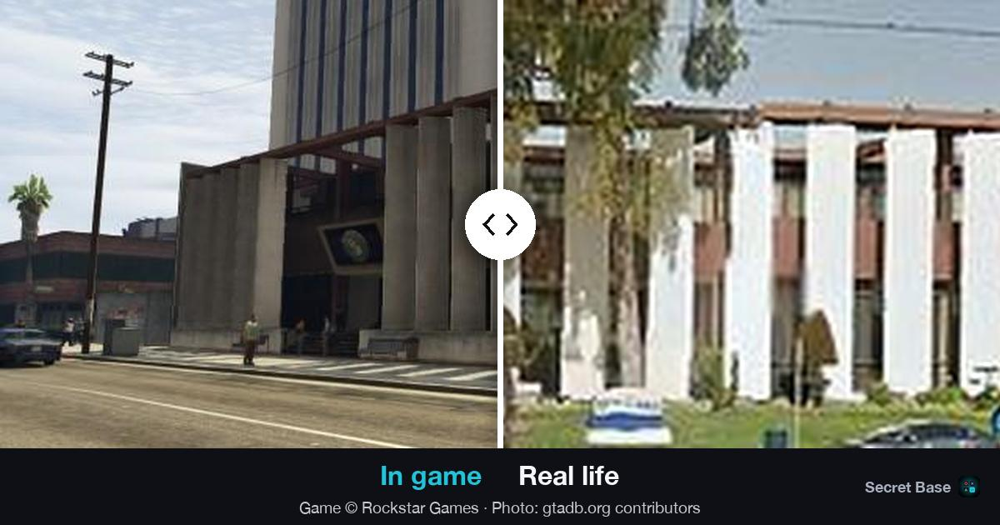
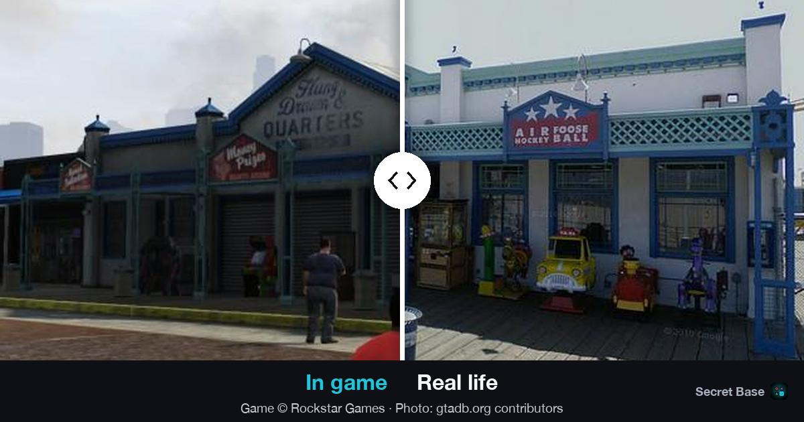
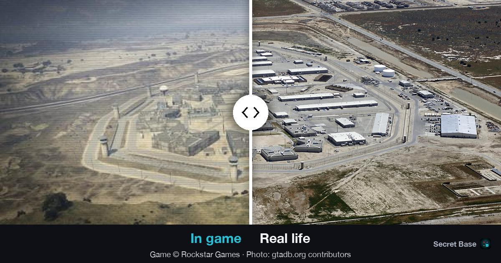

Превью ссылок с парами gtadb и без них
Шесть настоящих мест так, как их увидит друг в Telegram и iMessage. Переключатель ниже показывает, что станет с превью, если перед подачей в App Store выключить пары gtadb (флаг og_gtadb_pairs): фото из жизни тогда берутся только из свободных источников.
Внизу превью теперь одна спокойная строка авторства под снимками, на тёмной полосе: кадр игры, автор фото и лицензия. Логотип Secret Base маленький, справа. Подписи и ползунок стоят в середине, поэтому миниатюра-квадрат их не режет.
Если выключить флаг сегодня, из примерно 1 540 превью с парой gtadb около 270 останутся ползунком со свободным фото, около 160 станут двумя снимками рядом, а около 1 110 превратятся в кадр игры с вопросом «Where is it in real life?». Почти все последние — точки сообщества, у которых другого фото нет.
1Maze Bank Tower Лос-Анджелес, U.S. Bank Tower
Свободное фото есть (CC0). Без пары ползунок остаётся, меняется только ракурс справа: башня целиком вместо куска фасада.

Telegram, крупное превью
Telegram, миниатюра (квадрат из середины)
iMessage
2Знак Vinewood Голливуд, Mount Lee
У места только фото с лицензией BY-SA, но для превью есть замена из общественного достояния. Получается тот же ползунок, буквы совпадают даже точнее.

Telegram, крупное превью
Telegram, миниатюра (квадрат из середины)
iMessage
3Ocean View Hotel Майами-Бич, Clevelander
Свободного фото нет, только BY-SA: снимок стоит целиком, рядом с кадром игры. Сюрприз в другом: без пары кадр игры берётся из трейлера, и на первом плане героиня, а не отель.

Telegram, крупное превью
Telegram, миниатюра (квадрат из середины)
iMessage
4Davis City Hall Комптон, мэрия
Самый неприятный случай. В Commons у места только снимок фрески в почтовом зале, здание по нему не узнать. До подачи такие места стоит пройти глазами и подобрать фото.

Telegram, крупное превью
Telegram, миниатюра (квадрат из середины)
iMessage
5Hung Drawn & Quarters Санта-Моника, Playland Arcade
Свободное фото есть, но на нём флаги над пирсом, а не сам аттракцион. Ползунок формально сохраняется, смысл сравнения теряется.

Telegram, крупное превью
Telegram, миниатюра (квадрат из середины)
iMessage
6Bolingbroke Penitentiary Ланкастер, тюрьма Antelope Valley
Так выглядит большинство: точки сообщества gtadb. Другого фото из жизни у них нет, поэтому остаётся кадр игры и вопрос «Where is it in real life?».

Telegram, крупное превью
Telegram, миниатюра (квадрат из середины)
iMessage
Что нужно решить
Подпись: оставляем такой, как на картинках выше, и я выкладываю её во все превью. Это затронет только картинки превью, само приложение не меняется.
Флаг сейчас остаётся включённым, пары gtadb работают как раньше. Перед подачей места вроде мэрии Комптона и аркады на пирсе стоит пройти глазами и подобрать фото, чтобы выключение флага не дало пустых сравнений.